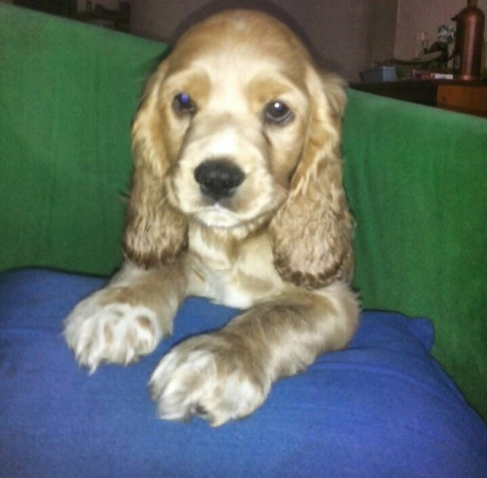

Princesita
NOMBRE
Princesa Maggie Merchán Cárdenas
RAZA
Cocker Spaniel
EDAD
4 años
CUMPLEAÑOS
22 de noviembre
CORTA HISTORIA
Nos regalaron a princesita cuándo a penas tenía 2 mesesitos de haber nacido. Una amiga
de mi mami tenía ooooootra amiga que tenía a la mamá cocker, una vez nacieron los cachorritos, nos
dieron a
princesita para adoptarla. Vivimos muy felices con ella, pero lastimosamente el 4 de diciembre de
2017
murio
al ser atropellada por una camioneta.


Brunito
NOMBRE
Bruno Merchán Cárdenas
RAZA
French Poodle
EDAD
4 años
CUMPLEAÑOS
22 de noviembre
CORTA HISTORIA
Una amiga de mi mami nos regalo a Copito, porque no tenían tiempo para cuidarlo. Cuando
mi mami lo adoptó, le cambiamos el nombre a "Bruno" y nos dimos cuenta que el perrito estaba enfermito
porque convulsionaba seguido. Sin embargo, mi mami y nosotras le dimos mucho amor hasta que tuvo que
irse al
cielo.


Gigisita
NOMBRE
Gigi Johana Merchán Cárdenas
RAZA
Mezcla entre Schnauzer y Pinscher
EDAD
Aproximadamente 7 años
CUMPLEAÑOS
18 de enero
CORTA HISTORIA
Cuando Brunito murio, Danna se puso muy triste porque nos habíamos quedado sin
dogs, así que mi mami le prometo a Danna que iba a conseguir a otro perrito. Tres días después de
una
fuerte búsqueda, Karen(Nuestra prima), contactó con un compañero de la U quién estaba dando en adopción
una
perrita que había encontrado en la calle (Gigi) y pues, la adoptamos.


Brunito
NOMBRE
Brunito Merchán Cárdenas
RAZA
Shih Tzu
EDAD
3 años
CUMPLEAÑOS
18 de enero
CORTA HISTORIA
Un día cualquiera, mientras mi mami estaba en su facebook, vio una fundación de
dogs que estaba dando en adopción a un perrito de la calle; mi mami hizo contacto con ellos y les
dijo
que lo iba a adoptar, así que ellos lo bañaron, pusieron super lindo y nos lo dieron.

Hannita
NOMBRE
Hanna Maria Merchán Cárdenas
RAZA
Shih Tzu
EDAD
4 años
CUMPLEAÑOS
18 de enero
CORTA HISTORIA
Una amiga de mi mami debía mudarse a otra casa que tenía el piso super delicado, así
que no podían mantener a un perrito allí. Como su amiga sabía que a mi mami le encantan los dogs, le
dijo que se la daba para que la adoptaramos y mi mami lo hizo.


Kokito
NOMBRE
Koko Emilio Merchán Cárdenas
RAZA
Pinscher Venadito
EDAD
8 años
CUMPLEAÑOS
18 de enero
CORTA HISTORIA
Pasados los años, tuvimos el anhelo de tener un nuevo perrito. Asi que mi mami empezó a
buscar uno, nuevamente se contactó con la fundación donde habíamos adoptado a Brunito y encontro a
Kokito.
Al día siguiente, mi mami les dijo que lo iba a adoptar y ese mismo día en la noche, llegó a la casa.